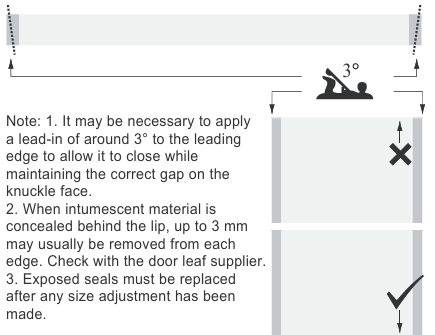
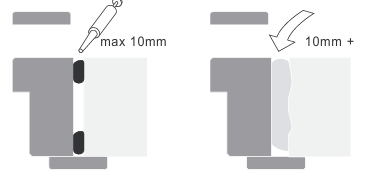

This document provides guidelines for fire door installation, emphasizing the importance of qualified installers, pre-installation preparation, site reception, hardware fitting, glazing, and the overall installation process
1 Installer qualifications
It is strongly recommended that the installer is a member of a recognised quality assurance scheme to ensure that best practice is used. In respect of fire doors, inspection authorities may require evidence that the installation process complies with the tested specification including:
- Intumescent systems.
- Compliance of the glazing with the tested detail supplied by the door leaf manufacturer.
- The size of all operating gaps.
- Intumescent protection around hardware and the quality of the preparations.
- The quality of the supporting construction and the prepared opening.
- The fixing of the fire door.
- Fire and smokestopping methods used in fitting-in gaps and voids.
2 Pre-installation preparation
2.1 First- or second-fix
Best practice is a second-fix operation with openings prepared as construction proceeds and pre-hung door assemblies installed later. The advantages are:
- Operating gaps (which may contain edge seals) can be maintained.
- Doors are delivered when site conditions are suitable.
Using the ‘first-fix’ method, doorframes are built in during
construction and door leaves are fitted later. This can be
unsatisfactory because:
- Construction operations and wet trades can damage finishes and cause distortion and/or swelling. The cost of remedial work and protection can be high.
- Door leaves may have to be tailored to each opening.
Doorframe design
- The doorframe design must allow for secure fixing.
Note: 1. Fixing within 25 mm from the edge of masonry (excluding
any plaster) should not be attempted .
2. Fixings into metal stud partitions should be made into a fulllength
timber filler in the stud.
Make fixings to each jamb spaced 100 mm from top and bottom
with others a maximum of 500 mm apart. (A centre fixing through
the head is sometimes used when deflection is not a risk.)
2.3 FCo-ordinating dimensions
The co-ordinating height, width and thickness of prepared openings, the fitting-in margin and allowed tolerances must be planned. This information must be available before the start of door manufacture.
2.3.1 Prepared openings
Prepared openings must be plumb, square, built to the coordinating dimensions subject to a tolerance of +5/-0 mm at each jamb and +5/-0 mm at the head and be of constant co-ordinating thickness around their perimeter within a tolerance of +/- 3 mm. It is vital to control partition thickness if architraves are to be fitted without excessive trimming and scribing.
Check accuracy of prepared openings as early as possible so that any remedial work can be completed before any attempt is made to install doors.
2.3.2 Doorframe size and fitting-in margin
The overall doorframe dimensions should be the co-ordinating height and width -5 mm (+/-2) on each jamb and -7 mm (+/-2) at the head to allow doorframes to be packed up a few millimetres if necessary for the door leaf to swing over high spots or floor coverings.

2.4 Recesses for floor mounted closer boxes
-Plan pockets to receive closer boxes in reinforcement, floors and screeds. The pockets must be formed and located with great accuracy to co-ordinate with the doorframe position.
3 Site reception
3.1 Moisture content
Timber doors are manufactured with moisture content of 10 - 12% for internal use and 12 - 14 % for external use. The applicable standard on this subject is BS EN 942:1996 Timber in joinery. General classification of timber quality.
- Do not bring joinery to site until moisture readings are between 40 and 60% RH and until after any forced-drying procedure has been completed.
3.2 Storage area
- The store must be clean, level, suitable for stacking doors and provide sufficient space for doors to be moved around, sorted and re-stacked as installation proceeds. The floor should be suitable to allow the use of pallet moving equipment.
3.3 Priming and sealing
- The applicable British Standard is BS 6150: 1991 Code of practice for painting of buildings.
- Prime or seal all items supplied in the white immediately following delivery including top and bottom edges, apertures and preparations for hardware .
- Apply further coats within a reasonable time and before door leaves are hung or assemblies are installed.

3.4 Handling
Avoid bruising and damage caused by heavy contact with the ground. Wear clean gloves to avoid leaving finger marks.
3.5 Stacking
3.5.1 Door leaves
Do not store door leaves standing upright or leaning as this causes bowing.
Stack horizontally on level supports that extend across the full width of the bottom door leaf. Provide support at the centre and at 300 mm from each end. If over 2150 in height, provide a second intermediate support.
Cover the supports with cardboard or similar to prevent marking.
Stack with the largest door leaf at the bottom with size reducing up the stack. Plain flush door leaves can be stacked to a maximum of around 20 door leaves. When door leaves have projections such as glazing beads or pre-fitted hardware, provide level intermediate battens between door leaves to allow clearance
3.5.2 Assemblies
The same principles apply when storing door assemblies. Stack with the door leaf lying in the closed position on the doorframe doorstop. Separate each assembly with level battens to ensure that projections such as hinge knuckles do not cause damage.
3.5.3 Covering
Exposure to light will fade timber Cover stacks with opaque sheeting to prevent fading and keep doors clean. This is very important for veneered doors.
4 Hardware
4.1 Preparation for hardware
Before installation, prepare doors to receive hardware using instructions provided by the hardware manufacturer or supplier. Note: Preparations are often available from the door manufacturer. These may be supplied ‘off machine’ i.e. with corners not squared out. Factory assembled doors can be made available fully prepared for hardware with door leaves hung in position though possibly removed for transit
4.2 Fitting hardware
Fit hardware using instructions provided by the hardware
Fit morticed hardware before hanging door leaves or installing door assemblies.
Fit intumescent materials exactly in accordance with details supplied.
Fit face fixed hardware at any convenient stage in the installation programme. Note: This work is often done immediately prior to handover to avoid the risk of loss or damage. The drilling of door leaf faces for latch spindles and keyways or cylinders is best left until there is no risk of further adjustment to the position of lock cases or keeps.
Lubricate hardware as required by manufacturer’s instructions.
5 Glazing
The applicable standard is BS 6262: 1982 Code of practice for glazing of buildings.
Glaze fire doors strictly in accordance with a specification for each type provided by the supplier and supported by evidence of test or assessment by a recognised authority.
6 Door installation
Install doors only when site conditions are suitable.
Note: Operating gaps around door leaves will vary between 2 and
5 mm. Any movement of the structure after doors are installed will
definitely affect these margins and cause malfunction. Movement
results from:
- Shrinkage due to drying out.
- Growth due to increase in moisture.
- Deflection of structural members.
Glaze fire doors strictly in accordance with a specification for each type provided by the supplier and supported by evidence of test or assessment by a recognised authority.
Defer installation if conditions are unsuitable.
6.1 Hanging door leaves
6.1.1Trimming edges
When it is necessary to trim door leaves, remove equal amounts from each vertical edge and make all height adjustment to the bottom of the door leaf.
6.1.2 Hinges
Hinges must be able to support loads imposed by the door leaf and hardware functions such as self-closing and back check. Consult the hardware supplier if necessary.
Use 3 hinges per door leaf for all fire doors or when above 1200 mm in height unless otherwise specified.
When door leaves exceed 2250 mm in height or 160 kg, consult the hardware supplier. One or more additional hinges may be required.
Note: The recommended position of hinges is: centre line of the top and bottom hinge 250 mm from the top and bottom of the door leaf with third hinge centre line 200 mm below the top hinge
6.2 Installing second-fix
6.2.1 Packing
Pack between the doorframe and the prepared opening immediately above each fixing position. Ensure that the door assembly when in position is perfectly plumb and square. The best practice is to use the hung leaf as a template. Avoid later shrinkage by using packing that is durable, hard and stable. Proprietary trouser leg packers are best. Alternatives are offcuts of laminate, metal shims or plywood.
Ensure that jambs are straight, operating gaps are even and in tolerance and that fixing screws cannot distort the frame when tightened.
6.2.1 Packing

Note: The lateral force at the bottom hinge position can compress packings and metal studs causing the leading edge to drop. Before installing, ensure that studs are secure and fillings are dry.
6.2.2 Fixing
When the doorframe has been packed into the prepared opening, remove door leaves if necessary to facilitate fixing.
Fix doorframes in masonry in conjunction with plugs and woodscrews with minimum 50 mm penetration into the masonry.
Fix doorframes in metal stud partitions with wood screws having drilled a pilot hole through the stud into the timber stud filler. Ensure that the doorframe fixing pulls the timber filling tightly into the stud and pulls the stud up tight against the packing.
Re-hang door leaves. Check and adjust for correct gaps and operation of seals. Compression seals should be 50% compressed along their entire length. Blade and brush contact seals should overlap the opposing face by 1.0 - 1.5 mm. Note: Adjustment to the fit of door leaves at the installation stage should be deferred until the site is completely dry when the defect will be fully apparent and can be remedied in a single operation:- Adjustments made too early can result in excessive gaps as the building dries.- If possible, carry out adjustments by reducing or increasing packing. Alternatively, pack out behind hinges or recess them further.- Only as a last resort should door leaf edges be trimmed; this may necessitate replacement of seals and repositioning of hardware affecting the quality and integrity of the door
When the doorframe has been packed into the prepared opening, remove door leaves if necessary to facilitate fixing.
6.2.3 Doorstops
Fix loose doorstops after all adjustments. Fit to suit the shape of the door leaf, permit an easy latching action and ensure any seals are in correct contact with the door leaf face
6.2.4 Stopping the fitting-in gap
Fill the fitting-in gap to suit fire, smoke or acoustic requirements before fitting architraves or installing the second half of split frames with integral architraves. Architraves alone may firestop gaps of FD30 doors but will not prevent leakage of cold smoke
Fill the fitting-in gap to suit fire, smoke or acoustic requirements before fitting architraves or installing the second half of split frames with integral architraves. Architraves alone may firestop gaps of FD30 doors but will not prevent leakage of cold smoke

Note: 1. To prevent cold smoke leakage the filler must completely
close the gap and have some flexibility.
2. When the fitting-in gap is constant and does not exceed 10 mm
the options include:- Gun-applied intumescent mastic suitable for both fire and
smokestopping.- Intumescent strips (with conventional mastic for smoke).
3. Large or irregular gaps and voids can be filled with cementitious
material, packed with mineral wool or sealed with intumescent
material. The intumescent options for gaps up to 35 mm that can
accommodate some movement and close voids in the case of fire
are intumescent plasters, acrylic emulsions and dry foams.
Fix architraves only when any required stopping is complete.
6.2.5 Concealment of fixings
Dress exposed fixings of doorframes, doorstops and architraves as specified. Note: 1. This operation and the final fitting of architraves should be left until all adjustments to gaps and door leaf operation have been made. 2. Screws are normally concealed with timber or plastic pellets. Pins are punched and filled with hard beeswax coloured to match
Remove all dust, clean the installed door and make good any damage to finishes according to instructions provided by the manufacturer